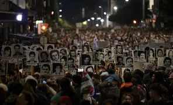
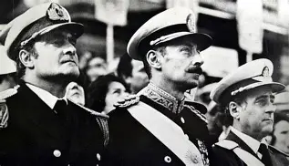
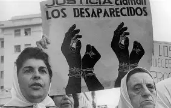
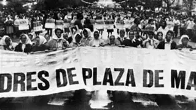
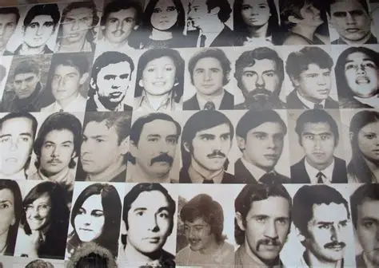

Introducción
Cada 24 de marzo, en Argentina, se conmemora el Día de la Memoria, Verdad y Justicia. Esta fecha recuerda el golpe de Estado de 1976 que dio inicio a la dictadura cívico-militar, responsable de un plan sistemático de represión ilegal que incluyó desapariciones forzadas, torturas, apropiación de niños y persecución política.
La jornada busca mantener viva la memoria de las víctimas, reafirmar el compromiso con la verdad y garantizar justicia frente a los crímenes de lesa humanidad. Es un día de reflexión colectiva, en el que la sociedad argentina se une para recordar y para decir: Nunca Más.
Contexto geopolítico y regional
La dictadura argentina de 1976 no fue un hecho aislado. En toda América Latina, durante las décadas de 1960 y 1970, se multiplicaron los regímenes militares que compartían una misma lógica: la Doctrina de Seguridad Nacional, impulsada en el marco de la Guerra Fría y promovida por Estados Unidos. Según esta doctrina, los gobiernos debían combatir al “enemigo interno”, identificado con movimientos sociales, sindicales, estudiantiles y políticos que cuestionaban el orden establecido.
En Brasil, desde 1964, se había instaurado una dictadura militar que sirvió de modelo para otros países. En Chile, el golpe de 1973 contra Salvador Allende dio lugar al régimen de Augusto Pinochet, caracterizado por la represión masiva y el exilio de miles de personas. Uruguay vivió la suspensión de las instituciones democráticas en 1973, mientras que Paraguay permanecía bajo el prolongado gobierno de Alfredo Stroessner desde 1954. Bolivia atravesó sucesivos golpes militares entre 1971 y 1982, y en Argentina el golpe de 1976 consolidó un plan sistemático de terrorismo de Estado.
Estos regímenes no actuaron de manera aislada. A través del Plan Cóndor, las dictaduras del Cono Sur coordinaron acciones represivas, compartieron información de inteligencia y persiguieron opositores más allá de las fronteras nacionales. Esta red transnacional de represión permitió secuestrar, desaparecer y asesinar militantes en distintos países, consolidando un entramado regional de terrorismo de Estado.
Dictaduras en América Latina (1960-1980)
| País | Inicio | Fin | Características principales |
|---|---|---|---|
| Brasil | 1964 | 1985 | Golpe militar, censura, represión política. |
| Chile | 1973 | 1990 | Golpe contra Allende, régimen de Pinochet, exilios masivos. |
| Uruguay | 1973 | 1985 | Suspensión de instituciones democráticas, persecución sindical. |
| Paraguay | 1954 | 1989 | Dictadura prolongada de Stroessner, represión sistemática. |
| Bolivia | 1971 | 1982 | Sucesivos golpes militares, inestabilidad política. |
| Argentina | 1976 | 1983 | Plan sistemático de terrorismo de Estado, desapariciones forzadas. |
La narrativa oficial del régimen
Tras el golpe de Estado del 24 de marzo de 1976, la Junta Militar encabezada por Jorge Rafael Videla presentó el inicio del llamado Proceso de Reorganización Nacional. Este proyecto fue difundido como una cruzada moral destinada a “restaurar los valores esenciales del ser nacional” y a combatir la “subversión” que, según el discurso oficial, amenazaba la estabilidad del país.
En sus primeros discursos, Videla justificó la toma del poder señalando que la democracia había sido corrompida por la demagogia y la violencia política. El régimen se presentó como garante de orden, disciplina y moralidad, prometiendo acabar con la corrupción y con el “vacío de poder” que, según ellos, había dejado el gobierno constitucional. La represión fue enmarcada como una “guerra” contra la delincuencia subversiva, ocultando que en realidad se trataba de un plan sistemático de terrorismo de Estado.
Los documentos oficiales del Proceso declaraban caducos los mandatos de Isabel Perón y de las autoridades electas, y establecían objetivos como reorganizar la Nación, restablecer la economía y preservar los valores tradicionales. Sin embargo, detrás de esta retórica se desplegó una política de censura, persecución y desaparición forzada de miles de personas, que buscaba eliminar toda forma de oposición política y social.
Esta narrativa oficial fue clave para legitimar la represión ante sectores de la sociedad y para construir un relato que justificara el accionar del Estado. Más adelante, en la transición democrática, esa visión alimentó la llamada teoría de los dos demonios, que intentaba equiparar la violencia de las organizaciones armadas con la violencia ejercida por el Estado, relativizando así la responsabilidad de la dictadura en los crímenes de lesa humanidad.






Crímenes de la dictadura
El autodenominado Proceso de Reorganización Nacional desplegó un plan sistemático de represión ilegal que constituyó crímenes de lesa humanidad. Estos delitos fueron cometidos de manera organizada y coordinada por las Fuerzas Armadas, las fuerzas de seguridad y sectores civiles cómplices.
- Desapariciones forzadas: miles de personas fueron secuestradas y mantenidas en cautiverio clandestino, sin registro oficial ni acceso a la justicia.
- Centros clandestinos de detención: funcionaron en todo el país, donde se aplicaron torturas físicas y psicológicas de manera sistemática.
- Apropiación de niños y niñas: hijos de personas desaparecidas fueron entregados ilegalmente a familias vinculadas al régimen, negándoles su identidad.
- Asesinatos y ejecuciones extrajudiciales: opositores políticos y sociales fueron asesinados sin juicio ni garantías legales.
- Censura y persecución cultural: se prohibieron libros, obras de teatro, canciones y se persiguió a artistas e intelectuales.
- Exilio forzado: miles de argentinos debieron abandonar el país para salvar sus vidas, generando una diáspora marcada por el miedo y la violencia.
- Violencia sexual como método de tortura: utilizada en los centros clandestinos para humillar y quebrar a las víctimas.
Estos crímenes no fueron excesos aislados, sino parte de un plan deliberado y sistemático que buscaba eliminar toda forma de oposición política y social. La memoria de estas violaciones a los derechos humanos es fundamental para sostener el reclamo de verdad y justicia.
Contra la teoría de los dos demonios
Durante los primeros años de la democracia, se instaló la llamada teoría de los dos demonios, que intentaba equiparar la violencia de las organizaciones armadas con la violencia ejercida por el Estado durante la dictadura. Este relato buscaba relativizar la responsabilidad del régimen militar, presentando la represión como una respuesta a un conflicto entre dos fuerzas equivalentes.
Sin embargo, la historia y la justicia demostraron que esta teoría es falsa y profundamente injusta. No existieron dos bandos con igual poder: existió un Estado que, con todos los recursos de sus fuerzas armadas y de seguridad, desplegó un plan sistemático de terrorismo de Estado contra la sociedad civil. Las víctimas no fueron solamente militantes armados, sino también estudiantes, trabajadores, artistas, periodistas, sindicalistas y ciudadanos comunes que fueron perseguidos por pensar distinto.
El sufrimiento de la sociedad argentina fue inmenso. Miles de familias quedaron desgarradas por la desaparición de sus seres queridos, y el miedo se instaló en cada espacio de la vida cotidiana. En ese contexto, las Madres de Plaza de Mayo se convirtieron en símbolo de resistencia y dignidad. Con sus pañuelos blancos, comenzaron a marchar cada jueves en la Plaza de Mayo para exigir la aparición con vida de sus hijos. Su lucha, sostenida en el tiempo, fue clave para visibilizar los crímenes y para mantener viva la memoria.
Los juicios por delitos de lesa humanidad, iniciados en la década de 1980 y retomados con fuerza a partir de 2003, confirmaron la existencia de un plan sistemático de represión ilegal. Las sentencias judiciales establecieron que las desapariciones, las torturas y las apropiaciones de niños fueron crímenes de lesa humanidad, imprescriptibles y no comparables con ningún otro tipo de violencia política.
La memoria colectiva, la lucha de los organismos de derechos humanos y las decisiones de la justicia argentina han dejado claro que no hubo “dos demonios”. Hubo un Estado que utilizó el aparato represivo para sembrar el terror y eliminar toda forma de oposición. Recordar este sufrimiento y reivindicar la lucha de las Madres y Abuelas de Plaza de Mayo es esencial para sostener el compromiso con el Nunca Más.
Organismos de derechos humanos y otras fuentes
Cómo empezaron las Madres de Plaza de Mayo
En 1977, en plena dictadura cívico-militar, un grupo de mujeres comenzó a reunirse en la Plaza de Mayo para exigir información sobre sus hijos e hijas desaparecidos. Eran madres que, frente al silencio oficial y la indiferencia social, decidieron transformar su dolor en acción colectiva.
Al principio se encontraban de manera informal, caminando alrededor de la Pirámide de Mayo porque la policía les prohibía permanecer quietas. Ese gesto simple —dar vueltas en círculo— se convirtió en un símbolo de resistencia pacífica. Muy pronto adoptaron el pañuelo blanco, confeccionado con pañales de tela, como emblema de su lucha y de la memoria de sus hijos.
Las Madres enfrentaron amenazas, persecuciones y hasta la desaparición de algunas de sus integrantes, pero nunca abandonaron la Plaza. Su persistencia logró visibilizar los crímenes del régimen y mantener viva la demanda de verdad y justicia en los años más oscuros de la represión.
Con el tiempo, su lucha trascendió las fronteras de Argentina y se convirtió en referente mundial de resistencia pacífica frente al terrorismo de Estado. La justicia argentina reconoció la validez de sus reclamos, y la historia las consagró como protagonistas fundamentales en la construcción de la memoria colectiva. Gracias a ellas, el país aprendió que el dolor puede transformarse en fuerza y que la memoria es un compromiso irrenunciable.